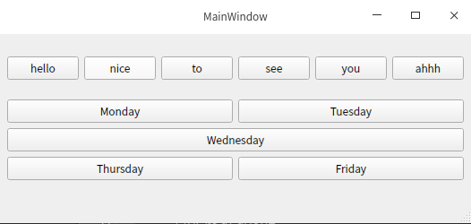

//头文件
#include <QMainWindow>
#include <QHBoxLayout>
#include <QVBoxLayout>
#include <QPushButton>
#include <QSlider>
#include <QSpinBox>
//QHBoxLayout
QWidget *widget=new QWidget(this);
this->setCentralWidget(widget);
QHBoxLayout *hbox_layout=new QHBoxLayout(this);
QPushButton *btn[6];
QString btn_str_h[6]={"hello","nice","to","see","you","ahhh"};
for (int i=0;i<6;++i) {
btn[i]=new QPushButton(btn_str_h[i]);
hbox_layout->addWidget(btn[i]);
}
//QGridLayout
QGridLayout *grid_layout=new QGridLayout(this);
QPushButton *gbtn[5];
QString btn_str_grid[6]={"Monday","Tuesday","Wednesday","Thursday","Friday","Saturday"};
for (int i=0;i<5;++i) {
gbtn[i]=new QPushButton(btn_str_grid[i]);
}
grid_layout->addWidget(gbtn[0],0,0);
grid_layout->addWidget(gbtn[1],0,1);
grid_layout->addWidget(gbtn[2],1,0,1,2);
grid_layout->addWidget(gbtn[3],2,0);
grid_layout->addWidget(gbtn[4],2,1);
QVBoxLayout *default_layout=new QVBoxLayout(this);
default_layout->addLayout(hbox_layout);
default_layout->addLayout(grid_layout);
centralWidget()->setLayout(default_layout);
运行结果：

//QColumnView
QStandardItemModel *model=new QStandardItemModel;
QStandardItem *name=new QStandardItem("Name");
QStandardItem *first_name=new QStandardItem("first name");
QStandardItem *last_name=new QStandardItem("last name");
name->appendRow(first_name);
name->appendRow(last_name);
model->appendRow(name);
QStandardItem *john=new QStandardItem("john");
QStandardItem *smith=new QStandardItem("smith");
first_name->appendRow(john);
last_name->appendRow(smith);
QStandardItem *address=new QStandardItem("adress");
QStandardItem *street=new QStandardItem("street");
QStandardItem *state=new QStandardItem("state");
QStandardItem *city=new QStandardItem("city");
QStandardItem *country=new QStandardItem("country");
address->appendRow(street);
address->appendRow(city);
address->appendRow(state);
address->appendRow(country);
model->appendRow(address);
QColumnView *columnview=new QColumnView;
columnview->setModel(model);
this->setCentralWidget(columnview);
运行结果：
//QDataWidgetMapper
//定义文本字符串
QStringList items;
items<<tr("主页")<<tr("工作")<<tr("其他");
//QStringListModel *type_model=new QStringListModel(items,this);
QStringList names;
names<<"小明"<<"小白"<<"小菜"<<"小红"<<"小丽";
QStringList address;
address<<"<qt>北京大街1号<br/>北京客栈</qt>"
<<"<qt>上海大街2号<br/>摩天轮游乐园"
"<br/>旋转木马</qt>"
<<"<qt>广州大街3号<br/>大排档烧卖</qt>"
<<"<qt>深圳大街4号<br/>无人机广场</qt>"
<<"<qt>香港大街5号<br/>明日之星<br/>梁朝伟别墅</qt>";
QStringList types;
types<<"0"<<"1"<<"2"<<"0"<<"2";
//创建模型
QStandardItemModel *model=new QStandardItemModel(5,3,this);//创建5行3列的模型
//创建控件
name_edit=new QLineEdit(this);
name_edit->setGeometry(0,20,300,20);
address_edit=new QTextEdit(this);
address_edit->setGeometry(0,50,300,170);
type_combobox=new QComboBox(this);
type_combobox->setGeometry(0,220,300,20);
type_combobox->addItem(items[0]);
type_combobox->addItem(items[1]);
type_combobox->addItem(items[2]);
//创建映射
mapper=new QDataWidgetMapper(this);
mapper->setModel(model);
//把三个控件映射到模型的三列上
mapper->addMapping(name_edit,0);
mapper->addMapping(address_edit,1);
mapper->addMapping(type_combobox,2,"currentIndex");
//每一列映射5个字符串数据
QStandardItem *item[5];
QStandardItem *name_item[5];
for (int i=0;i<5;++i) {
item[i]=new QStandardItem(names[i]);
model->setItem(i,0,item[i]);//添加到model的第0列
name_item[i]=new QStandardItem(address[i]);
model->setItem(i,1,name_item[i]);//添加到model的第1列
}
previous_button=new QPushButton(this);
previous_button->setText("上一步");
previous_button->setGeometry(300,20,85,30);
next_button=new QPushButton(this);
next_button->setText("下一步");
next_button->setGeometry(300,60,85,30);
connect(previous_button,SIGNAL(clicked()),
mapper,SLOT(toPrevious()));
connect(next_button,SIGNAL(clicked()),
mapper,SLOT(toNext()));
connect(mapper,SIGNAL(currentIndexChanged(int)),
this,SLOT(updateButtons(int)));
connect(type_combobox,SIGNAL(currentIndexChanged(int)),
mapper,SLOT(setCurrentIndex(int)));
}
void MainWindow::updateButtons(int value){
qDebug()<<"updateButton,value is :"<<value;
}
运行结果：
QListView 列表形态的视图控件
QTableView 基于模型/视图的表格视图控件
QTreeView 基于模型/视图的树形视图控件
QDesktopWidget 用一个显卡访问多个虚拟的桌面画面的控件
QUndoView 将撤销栈（undo stack）的内容显示并输出到列表空间的控件
QCalendarWidget 以日历形式显示用户选择的日期（以月为单位）的控件
//QCalendarWidget
QCalendarWidget *calendar=new QCalendarWidget(this);
calendar->setGridVisible(true);
calendar->setGeometry(0,0,400,400);
calendar->setMinimumDate(QDate(2020,3,1));
calendar->setMaximumDate(QDate(2020,4,1));
QMacCocoaViewContainer 打包（Wrapping）Cocoa视图类的Moc OS X的控件
QMacNativeWidget 提供根据Qt构成方式，将Qt控件添加到Cocoa各级结构方法的控件